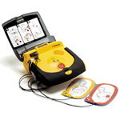

Welkom op de site van Stichting AED-netwerk Gemeente Duiven. Deze stichting is opgericht door initiatief van leden van MKB Duiven.
De stichting heeft als doel om:
Een Automatische Externe Defibrillator is een draagbaar toestel dat wordt gebruikt bij een persoon met een plotselinge hartstilstand. Deze AED onderzoekt zelf de patiënt en brengt zonodig een elektrische schok toe, met als doel het hart weer in een normaal ritme te brengen.
Voldoende AED-toestellen, gelijkmatig verspreid in de wijken en dag en nacht bereikbaar. Voor een goed netwerk denken we 25 AED-toestellen nodig te hebben.
Voldoende vrijwillige hulpverleners, ongeveer 500 in de gemeente. De hulpverleners worden door erkende opleidingscentra opgeleid.
Alle toestellen en opgeleide hulpverleners die willen deelnemen worden aangemeld bij AED-alert. Alle toestellen en hulpverleners worden verzekerd.
Het streven is om in een periode van 2-3 jaar een dekkend AED-netwerk tot stand te brengen. De kosten worden geraamd op circa € 50.000. We zijn nu in de fase van een haalbaarheidsonderzoek dat we in oktober 2012 willen afronden.
U kunt zich eenvoudig via deze website aanmelden als vrijwillige hulpverlener of sponsor. U wordt opgeleid door opleidingscentra tegen een gereduceerd tarief. Daarnaast kunt u ons helpen met een vrijwillige bijdrage. Er is veel geld nodig. Dus wilt u of wil uw bedrijf, organisatie, vereniging, school, bedrijfskantine ons ook hierbij steunen dan is uw bijdrage meer dan van harte welkom.
Aangezien we bij de Belastingdienst geregistreerd staan als ANBI (Algemeen nut beogende instellingen), mag u giften onder bepaalde voorwaarden aftrekken in uw aangifte inkomsten- of vennootschapsbelasting. Daarnaast geldt voor ANBI’s dat er geen schenk- en erfbelasting betaald hoeft te worden. Meer informatie hierover is te vinden op de website van de Belastingdienst.
Film gemaakt door Bas van Spankeren in opdracht van de Rabobank, in het kader van het Rabobank Stimuleringsfonds De Liemers 2013.
Het aantal mensen dat na een hartstilstand levend het ziekenhuis verlaat, is in zes jaar tijd flink gestegen. Dat komt doordat er steeds meer AED’s op straat zijn. Zo’n defibrillator geeft mensen met een hartaanval een schok, zodat het hart weer regelmatig gaat kloppen.
AED-Netwerk Gemeente Duiven is één van de vijf genomineerden voor een bijdrage uit het Stimuleringsfonds van Rabobank De Liemers. De bijdragen variëren van € 1.500 (vijfde plaats) tot € 10.000 (eerste plaats). Via het Stimuleringsfonds draagt Rabobank De Liemers bij aan de economische vitaliteit en leefbaarheid in de Liemers.
Wie buiten het ziekenhuis een hartstilstand krijgt, heeft veel meer kans om te overleven dan 15 jaar geleden. Dat blijkt uit nieuwe cijfers die de Hartstichting en het AMC in Amsterdam vandaag publiceren. De kans op overleven is het grootst als omstanders snel starten met reanimeren en een AED gebruiken die in de buurt is. lees meer
Maandagavond 25 juni om 20:00 uur vindt er een informatie avond plaats bij Zaal Gieling in Groessen.
DUIVEN - Een groep mkb-ondernemers in Duiven wil een netwerk van 25 defibrillators opzetten. Met deze levensreddende apparaten moet de gemeente compleet zijn gedekt. Een defibrillator kan worden ingezet bij hartfalen… lees meer
Er gaat iets veranderen: vanaf dinsdag 22 januari 2013 wordt ook in de regio’s Gelderland Midden (Arnhem) en Brabant Zuid-Oost (Eindhoven) gealarmeerd met HartslagNu en niet meer met AED-Alert…
De komende maanden worden enkele cursussen gegeven waaraan u kunt deelnemen. Hiervoor wordt een kleine vergoeding (€25) gevraagd. Deze kosten worden waarschijnlijk door uw verzekering (grotendeels) vergoed: zie de vergoeding van de zorgverzekeraars.
Let op De eerste 100 aanmeldingen (van de basiscursus) zullen gratis worden verzorgd (door Bosman). Dit geldt niet voor de herhalingscursus.
Voor een basis- of herhalingscursus
Hieronder een actueel overzicht van AED's die beschikbaar worden gesteld.